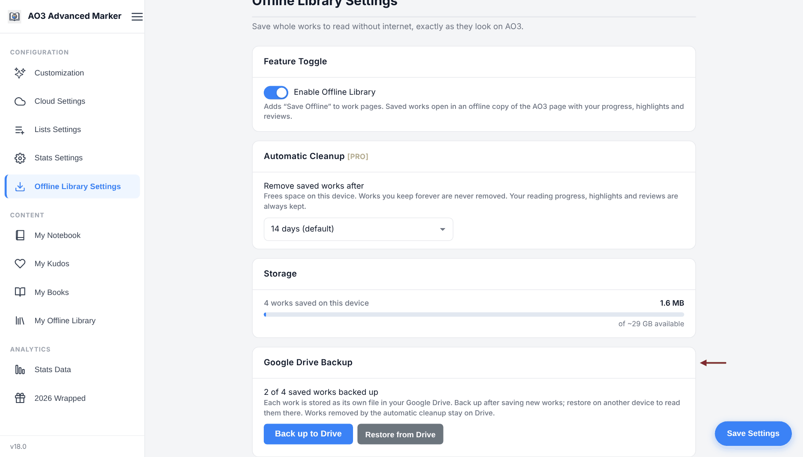
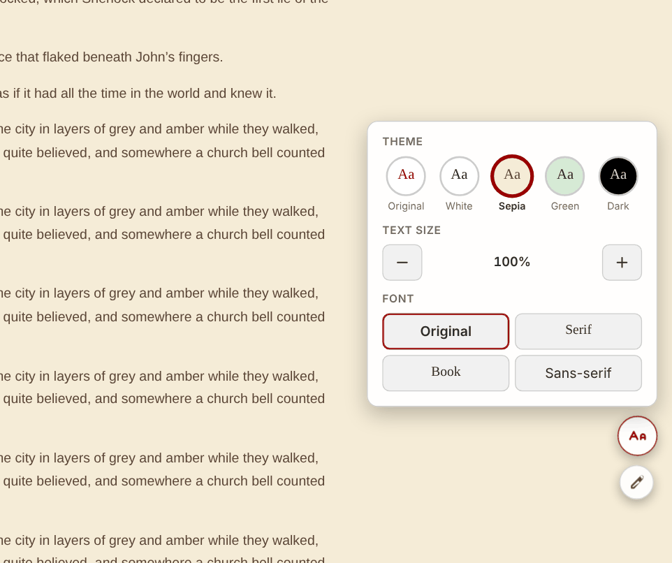
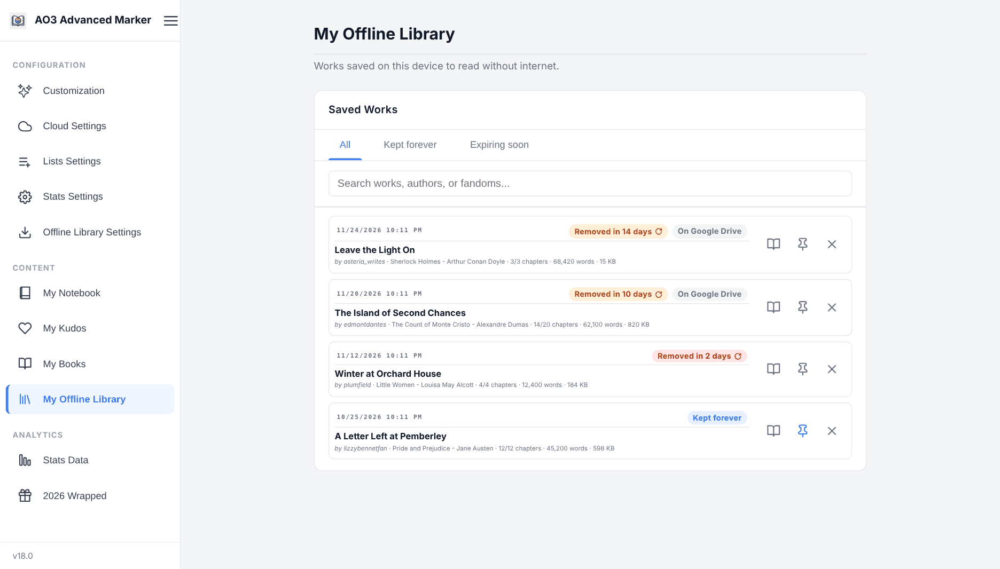
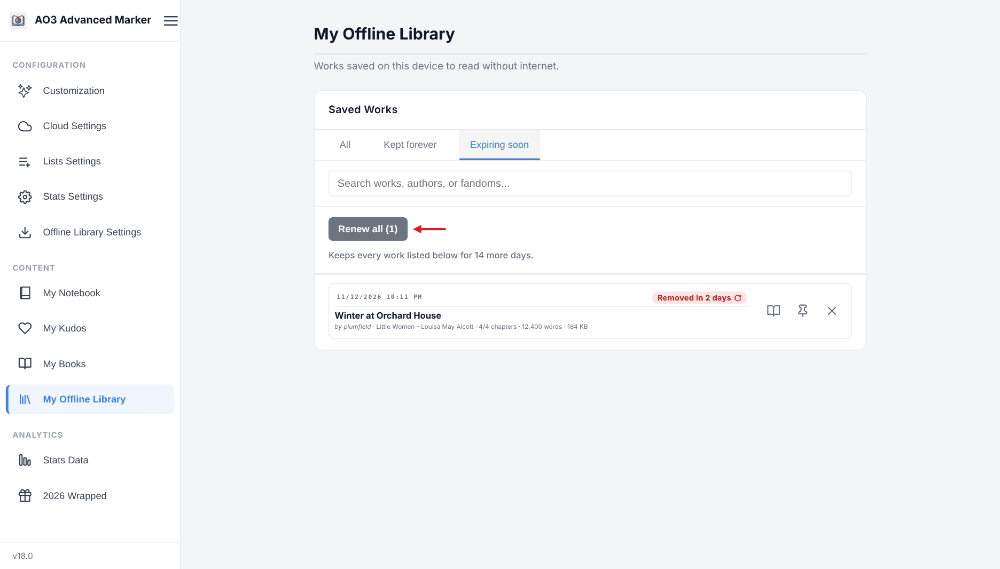

A fic you save offline opens in the extension's own reader, a copy of the AO3 page that works with no internet and even when AO3 is down. Everything else keeps working there: Chapter Read, Mark as Read, highlights, chapter reviews and star ratings.
Everyone can keep 3 fics offline at a time and back them up to Google Drive. PRO unlocks unlimited fics, Keep forever, renewing fics and choosing when old fics are removed.
Turning the Offline Library On
The Offline Library is on by default. Its settings are in the extension's Options Page, under Offline Library Settings:
- Enable Offline Library — shows the Save Offline button on fic pages.
- Automatic Cleanup (PRO) — how long saved fics stay on your device. See Automatic cleanup.
- Storage — how many fics are saved and how much space they use.
- Google Drive Backup — copies your saved fics to your Google Drive. See Backing up.
Click Save Settings after changing a setting.

Saving a Fic
Open the fic on AO3 and click Save Offline, next to AO3's own buttons. The button shows Saving… for a moment, then changes to Read Offline ✔. The whole fic is saved, every chapter, even if you were reading Chapter by Chapter.

If the author posts a new chapter or edits the fic, the button changes to Update Offline Copy. Click it to save the new version.
On the Free plan, when you already have 3 fics saved, a notice tells you the library is full. Remove a fic in My Offline Library to make room, or get PRO for unlimited fics.
Reading Offline
Click Read Offline ✔ to open the fic in the offline reader. It opens the way you last read on AO3, Chapter by Chapter or Entire Work, at the chapter where you stopped.
Without internet, you can open your saved fics from:
- My Offline Library, in the Options Page (see below).
- Your lists: a saved fic shows a Read offline button. See the Lists guide.
In the reader you can mark chapters, highlight text and write reviews as usual. If you use Sync to AO3 Bookmarks, the bookmark is created the next time you open AO3.
The reader adds two buttons to the fic's menu: Keep Forever (PRO, see Automatic cleanup) and Remove Offline Copy.

Theme, text size and font
Click the round Aa button at the bottom right of the reader to change how the fic looks:
- Theme — Original, White, Sepia, Green or Dark.
- Text size — from 80% to 200%.
- Font — Original, Serif, Book or Sans-serif.
Your choice is saved on this device and applies to every fic you open in the reader. It's free for everyone.

My Offline Library
In the Options Page, open My Offline Library to see every fic saved on this device, with the date you saved it, its fandom, chapters, words and size. Use the search to find a fic by title, author or fandom.
- The colored label shows when the fic will be removed, like "Removed in 10 days", or Kept forever. It turns red when there are 3 days or less left.
- On Google Drive means this version of the fic is in your backup.
- On the right: open the fic, keep it forever (PRO) and ✕ to remove it.

Removing a fic only deletes the offline copy. Your reading progress, highlights and reviews are kept. If the fic is also on your Google Drive, a second question asks whether to delete it there too; choose Cancel to keep it on Drive.
Automatic Cleanup and Keep Forever
To free space, saved fics are removed from your device after a while. The cleanup runs when your browser starts, after you save a fic and when you open the Offline Library in the Options Page. It never touches your Google Drive backup.
- Free: fics are removed 14 days after you save them.
- PRO: choose 7, 14, 30 or 60 days, or Never, in Offline Library Settings.
With PRO you can also:
- Keep forever — the fic is never removed by the cleanup. Use the pin in My Offline Library or Keep Forever in the reader. The Kept forever tab lists these fics.
- Renew — click a fic's removal label to start its time again. The Expiring soon tab lists fics removed within 7 days, with Renew all to renew them at once.

Backing Up to Google Drive
Your saved fics can go to your own Google Drive, so you can read them on your other devices. It's free for everyone. First connect your Google account in Cloud Settings (see the Google Drive sync guide), then go to Offline Library Settings › Google Drive Backup:
- Back up to Drive — sends the fics that are new or changed since your last backup. Back up after saving new fics; it doesn't happen on its own.
- Restore from Drive — on another device, brings back the fics that are on your Drive and missing or older on this device.
Fics removed by the cleanup stay on Drive, so you can restore them later. On the Free plan, a restore brings back only as many fics as fit in your 3 free spaces, newest first.
Free Plan and PRO
- Free: up to 3 fics at a time, removed after 14 days, reading offline, display settings and Google Drive backup.
- PRO: unlimited fics, Keep forever, renewing fics and your choice of cleanup time.
If you go back to the Free plan, nothing is deleted right away. You can't save new fics until you're under 3, and fics you kept forever follow the 14-day cleanup again.